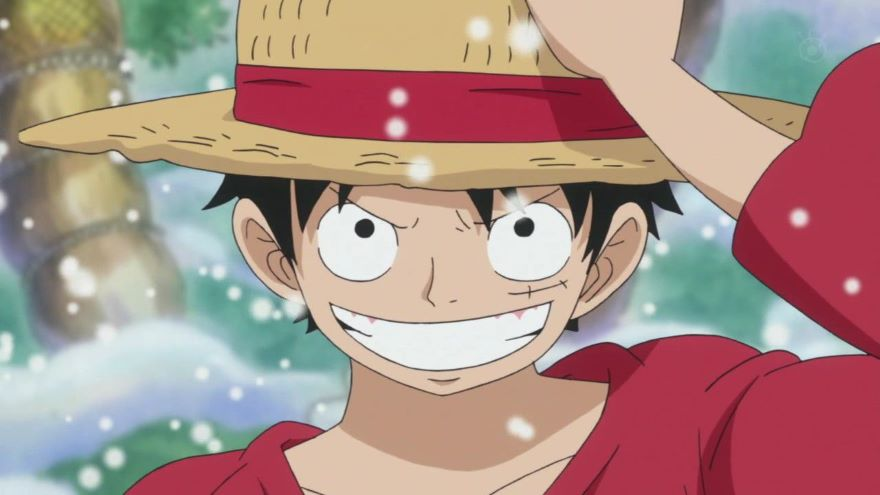
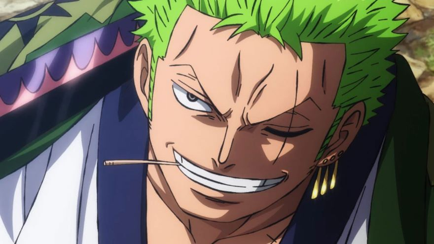
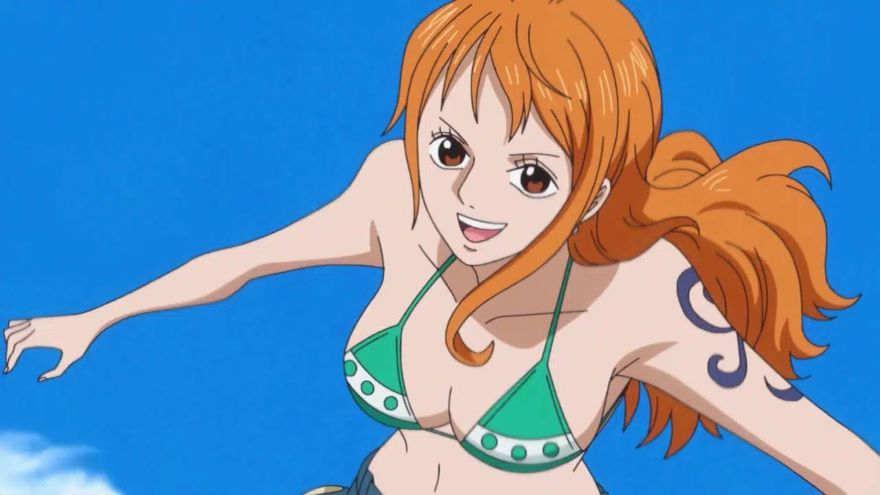
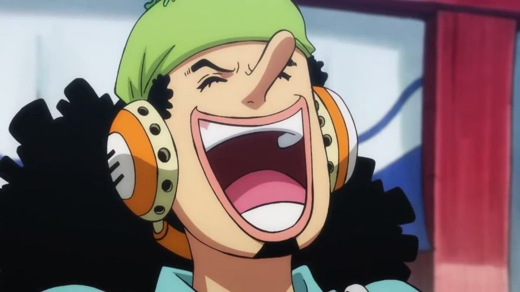
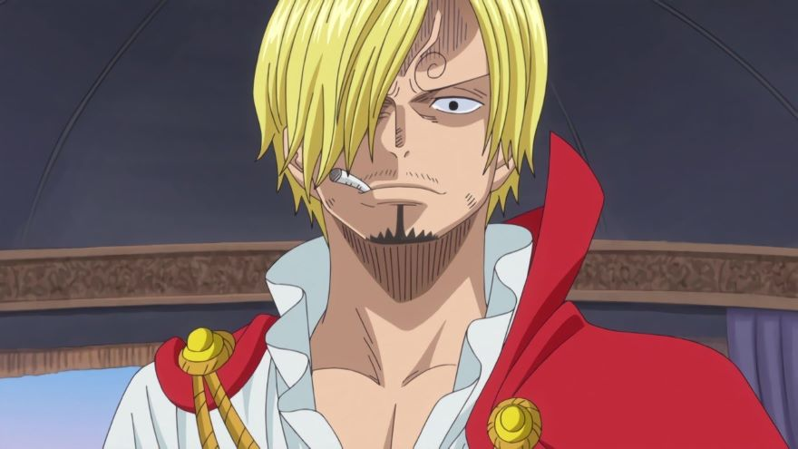
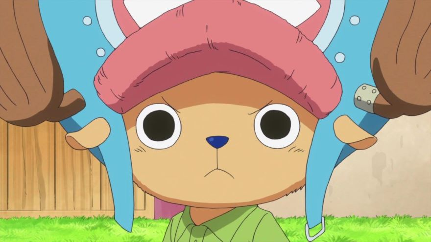
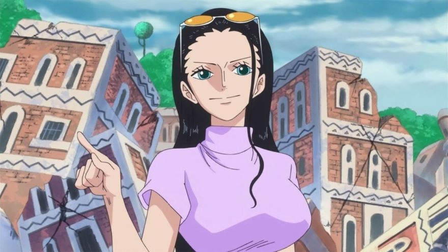
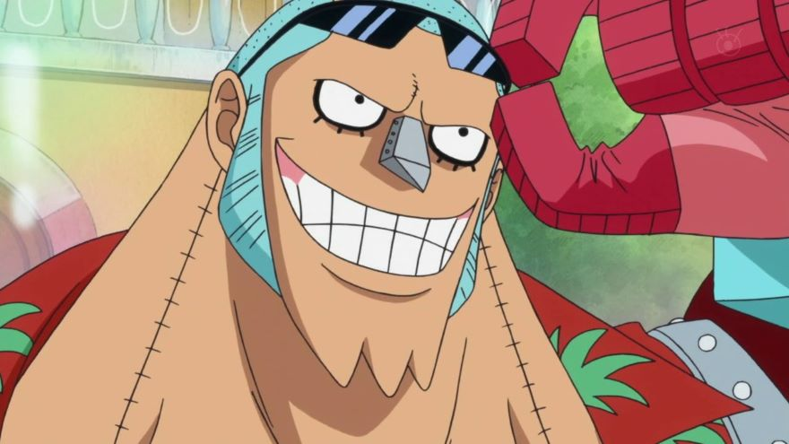
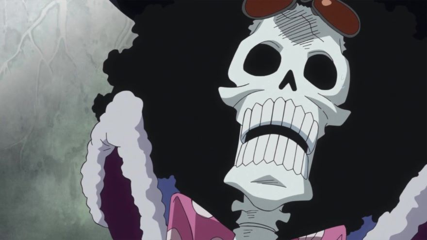
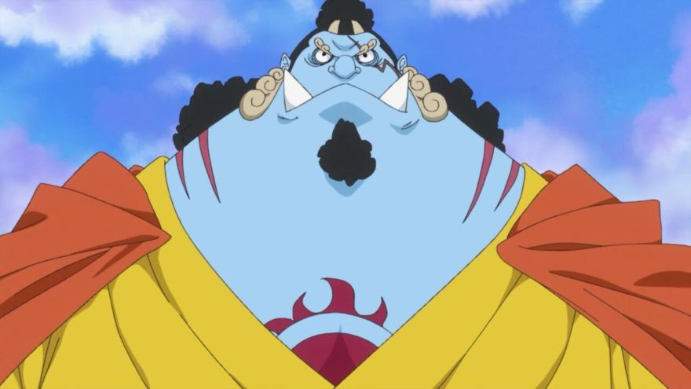

Conheça um pouco sobre todos os Chapéus de Palha
Atualmente, o Bando do Chapéu de Palha é uma das tripulações mais influentes e poderosas do mundo de One Piece, sendo capaz de até mesmo enfrentar os Quatro Imperadores, indivíduos absurdamente fortes.
Embora eles sejam considerados uma "pequena" tripulação, os Mugiwaras estão lotados de gente incrivelmente poderosa, pessoas que cada vez mais estão se tornando figurões em todo o mar.
Mas, você conhece todos os membros desse incrível bando? Não? Então confira abaixo um pouco sobre cada membro dessa infame tripulação.
Monkey D. Luffy
O Capitão do Bando do Chapéu de Palha, Mugiwara no Luffy. Por que não começar por ele, não é mesmo? Bem, nosso querido protagonista dispensa apresentações. Nascido na Vila Foosha no East Blue, Luffy é jovem com uma personalidade bastante divertida e cativante, com uma facilidade surpreendente de fazer novos amigos. Quando Era só um garoto, ele acabou acidentalmente comendo a Gomu Gomu no Mi se tornando assim, feito de borracha. Seu maior sonho desde criança era se tornar o Rei dos Piratas, e ele está determinado a conseguir realizar seu sonho algum dia. Atualmente, Luffy já derrotou inúmeros inimigos poderosos, Shichibukais, Vice-Almirantes, Piratas e até mesmo o Yonkou Kaido das Feras.
Poderíamos falar o dia todo só sobre ele, mas, vamos dar espaço para os demais integrantes da tripulação.
Roronoa Zoro
O Caçador de Piratas, Rei do Inferno, Marimo, chame do que quiser. Ele é Roronoa Zoro, o primeiro tripulante da tripulação dos Chapéus de Palha. A origem de Zoro ainda é bastante misteriosa, mas podemos falar de onde ele foi criado. O espadachim cresceu na vila Shimotsuki onde foi treinado por seu mestre, Koushirou, ao lado de sua filha Kuina, que infelizmente acabou falecendo. Zoro tem um objetivo bastante ambicioso, se tornar o maior espadachim do mundo, posto esse que é ocupado por Mihawk. Usuário do estilo de três espadas, ele está cada vez mais próximo de seu propósito.
Nami
A incrível navegadora dos Chapéus de Palha, se juntou a tripulação logo depois de Zoro, durante o Arco do Arlong Park, se tornando assim, a terceira integrante. Nami, inicialmente, não pretendia fazer parte do bando, mas após Luffy salvar seu vilarejo das mãos de Arlong, ela decidiu entrar. Ela tem uma paixão em desenhar mapas, inclusive, seu maior sonho é desenhar o Mapa Mundi algum dia.
Usopp
Não poderíamos deixar de falar dele, aquele que não tem medo de nada e nem de ninguém, Deus Usopp! Ele foi o quarto integrante do bando, entrando na tripulação logo depois do grupo o ajudar salvar sua amiga Kaya. Tendo como seu pai o grande atirador Yassop, ele herdou um imenso talento para pontaria, sendo um dos melhores atiradores de todos. Seu objetivo é se tornar um grande guereiro do mar e transformar todas as suas histórias fantasiosas em verdade.
Sanji
"Nami-Suwaaaaan"! Tenho certeza que você já sabe de quem estamos falando. Ele memso, Sanji. O cozinheiro dos Chapéus de Palha. Foi o quinto membro da equipe, e assim como nami, ele não tinha interesse em entrar na tripulação, mas quando o seu restaurante, o Baratie, foi atacado por piratas, ele recebeu uma grande ajuda de Luffy, que derrotou todos os piratas no processo, então, Sanji se viu forçado a aceitar o pedido de seu novo capitão. Seu objetivo principal é encontrar o All Blue, um mar onde todos os mares se encontram.
Chopper
Chopper foi o sexto membro do bando, sendo ele o médico do bando. Originalmente Chopper era uma rena de nariz azul, porém, após comer a Hito Hito no Mi Chopper se tornou algo entre um ser humano e uma rena, além de receber a inteligência e habilidade de falar como os humanos. A pobre rena sofreu a vida toda por ser diferente, mas ele se sentiu finalmente aceito quando Luffy o chamou para entrar no bando. Seu principal objetivo é encontrar a cura para toda e qualquer doença que exista.
Nico Robin
Nico Robin, a "filha do demônio". Ela é usuária da Hana Hana no Mi e foi a sétima integrante da tripulação, e também é uma das pessoas mais inteligentes e importantes do mundo. Robin tem a capacidade incrível de ler poneglyphs, sendo uma das pouquíssimas pessoas no mundo com essa capacidade. Ela decidiu entrar na tripulação logo depois da queda da Baroque Works em Alabasta. Seu objetivo de vida é encontrar o "Rio Poneglyph" que acreditasse possuir a verdadeira história do mundo, incluindo o Século Perdidio.
Franky
"Supeeeeer!" Cutty Flam, mais comumente chamado de Franky, foi o oitavo membro a entrar na tripulação. O carpinteiro do bando viveu praticamente sua vida toda em Water 7, sob a tutela do Sr. Tom. Depois de alguns acontecimentos desastrosos, Cutty Flam optou por modificar o próprio corpo com partes mecânicas, se tornando assim um incrível ciborgue. Embora ele tenha sido introduzido na história como um antagonista, Franky acabou por se tornar uma parte muito importante da equipe dos Chapéus de Palha.
Brook
Brook foi um dos últimos a entrar na tripulação (e o mais fácil tembém). Ele é usuário da Yomi Yomi no Mi e também um esqueleto praticamente imortal. Após passar mais de 50 anos completamente sozinho no navio de sua antiga tripulação, Brook acabou se encontrando com os Chapéus de Palha, e logo em seguida entrou na tripulação a pedido de Luffy. Ele é um ótimo espadachim e um músico extremamente habilidoso, podendo tocar qualquer instrumento com perfeição.
Jinbe
Jinbe, O Cavaleiro dos Mares, timoneiro dos Chapéus de Palha. Ele, recentemente, se tornou o décimo tripulante da tripulação e até então o último. Sendo ex-shichibukai, Jinbe possui grande força e habilidade de combate, parte por ser um Homem-Peixe e por ter um incrível nível de Karatê Tritão. Jinbe Foi essencial para o bando dos Mugiwaras várias vezes, como em Marineford, Whole Cake e Wano. Seu principal objetivo é acabar com o preconceito dos humanos aos tritões, e assim, poderem viver em harmonia.